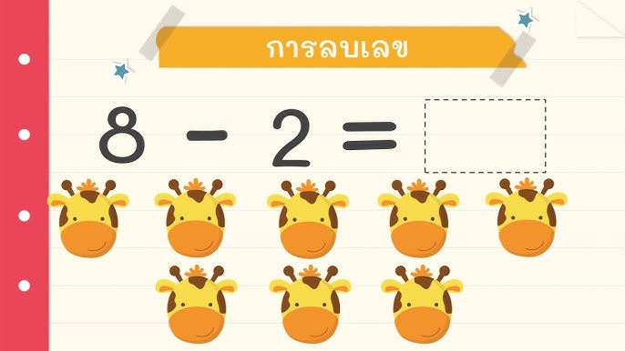

การลบ (-)

การลบ
การลบเป็นการดำเนินการทางคณิตศาสตร์ที่ใช้สำหรับการนำจำนวนหนึ่งออกจากอีกจำนวนหนึ่ง เพื่อหาจำนวนที่เหลืออยู่ หรือหาความแตกต่างระหว่างจำนวนสองจำนวน
ในการลบ เราใช้เครื่องหมาย (−) เป็นสัญลักษณ์แทนการนำจำนวนออก และใช้เครื่องหมาย (=) เพื่อแสดงว่าค่าทั้งสองด้านเท่ากัน จำนวนที่ได้หลังจากการลบเรียกว่า ผลต่าง
ตัวอย่างเช่น
10 − 4 = 6
หมายความว่า เมื่อมีจำนวน 10 และนำออกไป 4 จะเหลือจำนวน 6 ดังนั้น 6 จึงเป็นผลต่างของ 10 และ 4
การลบสามารถทำได้กับจำนวนหลายประเภท เช่น จำนวนเต็ม จำนวนทศนิยม และเศษส่วน โดยอาจมีวิธีการคำนวณที่แตกต่างกันตามชนิดของจำนวน